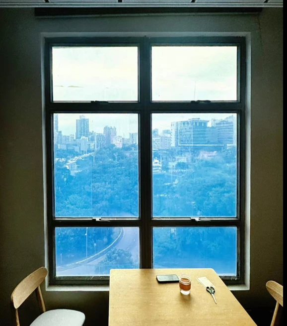

Building environment and energy research
Window films for
heat and humidity control
In Hong Kong’s hot, humid climate, two materials could help retrofit existing windows. A coating on the glass limits solar heat gain. A film at the window edge captures moisture and releases it when warmed by sunlight.
Explore the two technologiesResearch centreInternational Centre of Urban Energy Nexus (UEX)The Hong Kong Polytechnic University

Glazing / Solar radiation
The view through coated glass
The coating lets visible light through while its nanoparticles absorb part of the near-infrared radiation in sunlight. Matching the refractive indices of the particles and their surroundings reduces scattering, helping preserve the view.


Photographs from Figure 2 of the project supplement. The optical measurements are for the high-transparency sample. See Figure 2 of the coating study
Window-edge film / Moisture uptake and release
A film that absorbs indoor moisture
At night, water-attracting nanofibres capture moisture from the air, and a hydrogel layer stores it. As the film dries in sunlight, it scatters more light and shades the window.
Relative humidity after six hours
Starting at 91.73% relative humidity, researchers compared the film with equal masses of two common desiccants in a sealed chamber.
- Moisture-responsive film
- 53.76%
- Silica gel
- 72.05%
- 4A molecular sieves
- 76.22%
Film sample: 5 × 5 × 0.5 cm. Chamber: 40 × 60 × 40 cm. See Figure 3b.
Watch the PolyU interviewHow can water captured from the air be used?
A separate film stores water for plant irrigation. In a sealed 0.096 m³ chamber, a sample weighing about 1 g reduced relative humidity from 90.7% to 21.6% in one hour. Under ambient conditions, the researchers also reported a water yield of about 1.1 kg per square metre per day. Read the water-harvesting study
Building measurements / Two-room comparison
How hot did the sunlit spots get?
On three consecutive sunny days, the sunlit spot in the room with bare glass peaked at about 40°C. The corresponding spot in the room with coated glass reached 32–33°C. On the rainy day, the temperatures were closer.

How did the glass and interior walls compare?
The window in the coated room averaged 1.4–1.7°C warmer, while the interior wall averaged 0–0.6°C cooler. These readings refer to the glass and wall surfaces. The chart above shows the sunlit and shaded measurement points.
Hong Kong case study / Retrofit estimates
Which retrofit fits the building?
A case study of an existing building in Hong Kong compared replacement vacuum low‑E glazing with coating the existing single or double glazing. Filter by installation area to compare estimated energy savings, investment and payback.
| Retrofit option | Coverage | Energy savings (%) | Energy saved (kWh) | Investment (HKD) | Payback (years) |
|---|---|---|---|---|---|
| Replacement vacuum low‑E glazing | Whole building | 11.27% | 864,622 | 18,000,000 | 13.01 |
| Replacement vacuum low‑E glazing | South façade | 5.18% | 397,595 | 6,331,521 | 9.95 |
| Coating on single glazing | Whole building | 5.06% | 388,082 | 119,845 | 0.19 |
| Coating on single glazing | South façade | 2.95% | 226,267 | 42,154 | 0.12 |
| Coating on double glazing | Whole building | 9.74% | 746,633 | 2,857,496 | 2.39 |
| Coating on double glazing | South façade | 8.66% | 663,744 | 2,802,269 | 2.64 |
Estimates for this building and the stated installation areas. Project supplement, Figure 6, and project presentation, slide 13.
PolyU Research and Innovation Office
Smart window films
With Prof. Jerry Yan
The window-film segment begins at 00:23.
Watch on YouTubeResearch papers
About us
Who we are
We are a research team in the Department of Building Environment and Energy Engineering at The Hong Kong Polytechnic University, working within the International Centre of Urban Energy Nexus (UEX). We develop window coatings and films that reduce solar heat gain and indoor humidity in existing buildings, and test them from the laboratory to occupied rooms.
- Ir Prof. YAN Jinyue Jerry
- Department of Building Environment and Energy Engineering, PolyU
- Dr LIU Junwei
- Department of Building Environment and Energy Engineering, PolyU